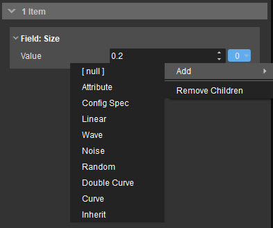
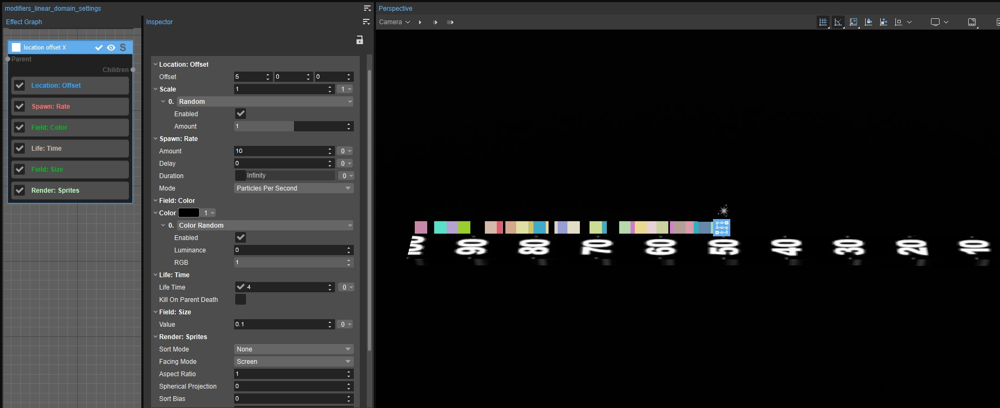
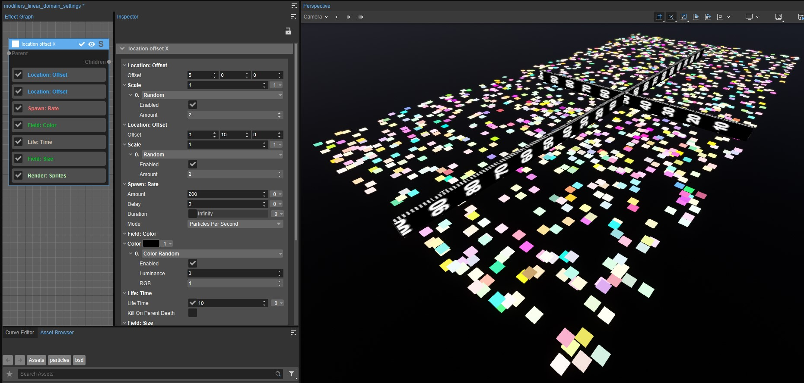
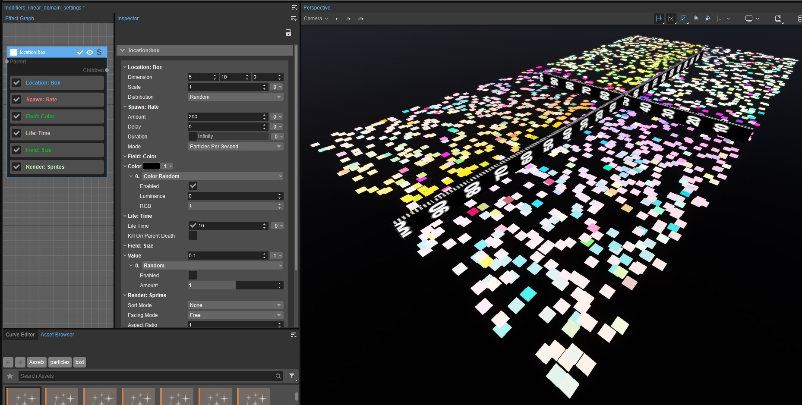
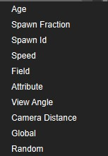
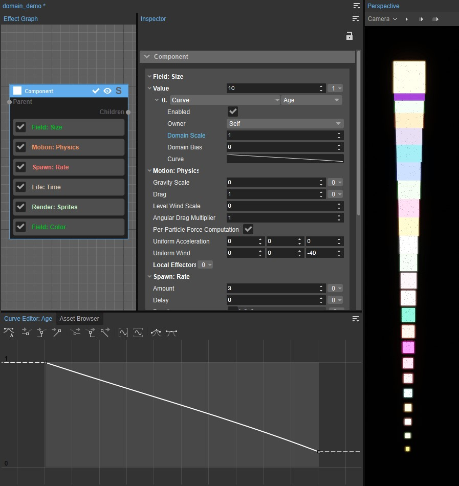
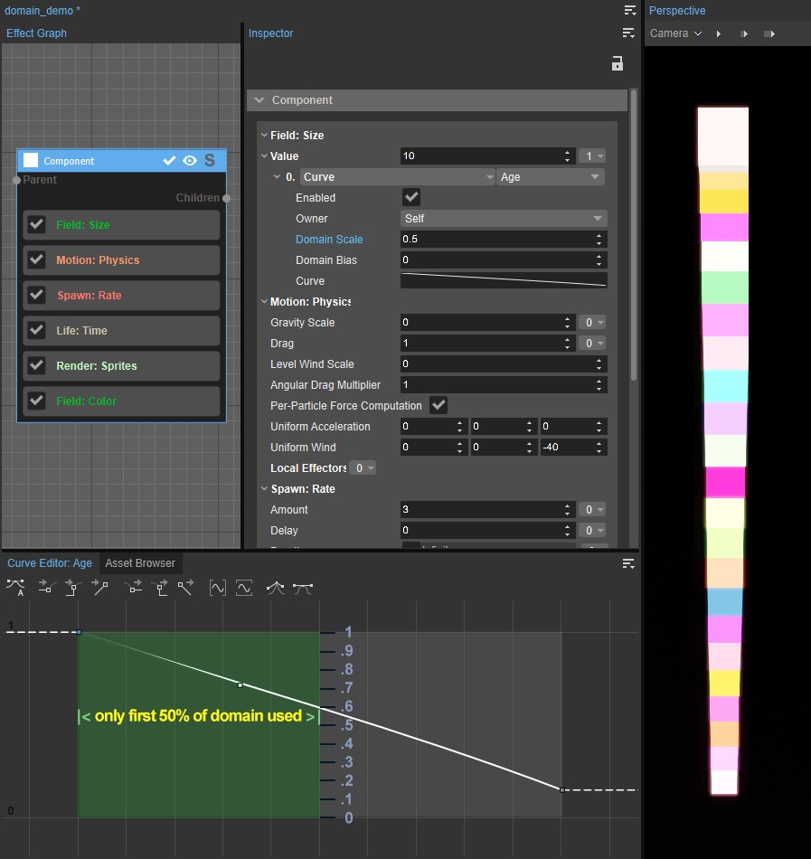
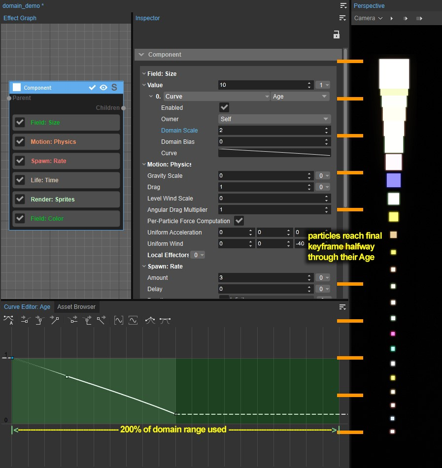
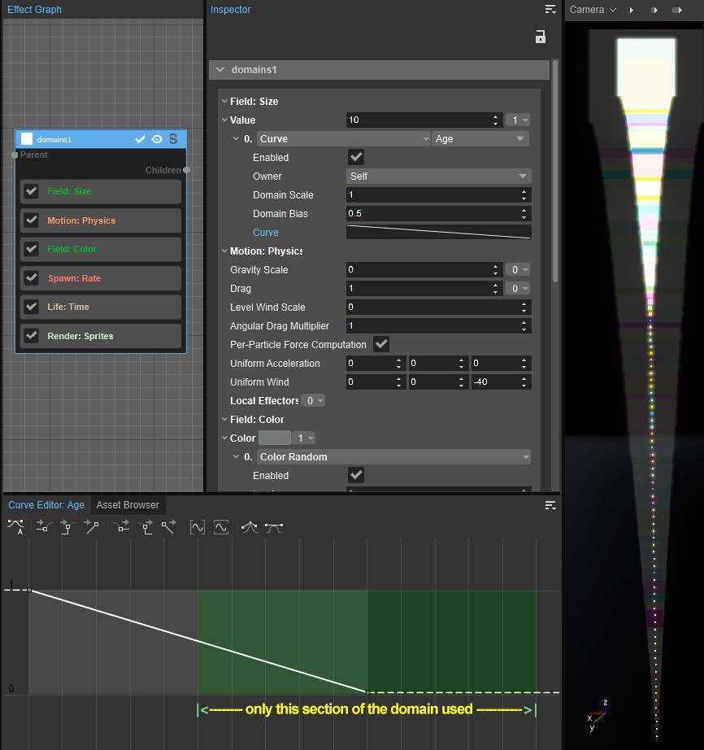
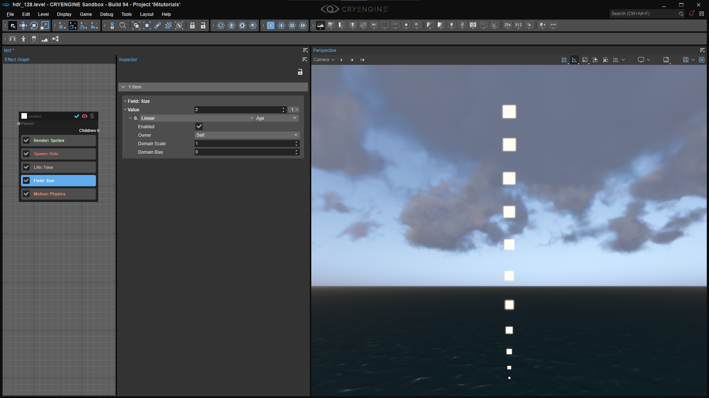

Это вторая часть нашей серии уроков по эффектам частиц. Сегодня мы сосредоточимся на двух концепциях: Модификаторы и Домены.
Это руководство основано на концепциях, которые мы рассмотрели в часть первая этой серии руководств, поэтому убедитесь, что вы уже знакомы с тем, что там было описано.
Введение в модификаторы
Вы уже познакомились с модификаторами в первой части: Кривая Модификатор (17:03) и Случайный Модификатор (18:26), но в этом уроке мы углубимся в них, а также в домены, от которых они зависят.
Вы можете начать с создания упрощенной версии частицы дыма, которую мы создали в прошлый раз, как описано в части 1:
- Создайте свою новую частицу
- Щелкните правой кнопкой мыши и добавьте расширенный → дым template.
- Установить Спавн:Скорость → Количество чтобы 3 частиц в секунду,
- Установить Движение:Физика → Шкала гравитации чтобы -.5 поэтому частицы float вверх,
- И установите Жизнь:Время → Время жизни чтобы 6 секунды,
- Наконец, сделайте частицы немного больше, установив Поле:Размер → Значение чтобы 2.
Нажмите на 

Модификаторы
Случайный модификатор
Теперь пришло время изучить модификаторы. Первый модификатор, который мы собираемся добавить, — это тот, который мы использовали в прошлый раз, и это просто Случайный Модификатор. Если вы перетащите Случайный → Сумма ползунок, вы увидите, что мы можем варьировать его между 0 и 2... но что на самом деле представляет собой значение 2 и как оно используется?
Это число по существу создает диапазон случайных значений, который всегда от 1 минус сумма чтобы 1. Другими словами, то, что вы настраиваете косвенно через Случайный → Сумма фактически является основой минимум случайное значение, но максимальное значение всегда 1.
В Случайный ценность 1, вы получите рандомизированные числа между 0, что 1 - 1и 1. Затем эти числа умножаются на значение, которое вы изменяете. Поле:Размер → Значение в данном случае или любой выбранный вами модификатор. И если вы наблюдаете за появлением частиц, вы действительно можете увидеть их размеры от крошечных до первоначальных размеров, но никогда больше, потому что максимальный размер Случайный значение 1, и это значение умножается на исходный размер.
Стоит отметить, что этот максимум Случайный ценность 1 означает, что вы не можете увеличивать числа, а только уменьшать их, поэтому исходное число должно быть самым большим значением, которое вы когда-либо хотели видеть.
Отрицательные случайные значения
Далее, если вы посчитаете, вы быстро увидите, что если вы установите Случайный → Сумма до значения, большего, чем 1, ваши минимальные значения начнут становиться отрицательными, потому что это значение всегда вычитается из 1. Чтобы продемонстрировать это, нам нужно изменить что-то кроме Поле:Размер, потому что «отрицательный размер» невозможен.
Вместо того, чтобы изменять этот компонент, который вы создавали, скажем, вы хотите сохранить его в том виде, в каком он есть, поэтому, если вы передумаете позже, вам не придется отменять миллионы изменений, вы можете сделать копию всего компонента, щелкнув правой кнопкой мыши область прямо под строкой заголовка компонента и выбрав Копировать, затем щелкните пустую область на графике эффектов и выберите «Вставить» или нажмите Ctrl + В.
Теперь у нас есть два компонента, которые делают одно и то же. Итак, чтобы облегчить нам жизнь, мы дадим имя каждому компоненту, щелкая по названию с помощью double. Мы позвоним первому случайный размер. А поскольку нам пока не хочется его видеть, давайте также отключим один из компонентов, нажав кнопку
Отключение компонента — это не то же самое, что просто его скрытие с помощью
Для получения дополнительной информации см. Particle Editor страница.
Теперь нам нужно заставить наши частицы появляться случайным образом по обе стороны от фактического положения объекта-эмиттера частиц. Для этого нам понадобится Местоположение:Смещение Особенность. Местоположение:Смещение это очень полезный способ изменить положение появления частиц.
На изображении ниже показана десятиметровая линейка с излучателем частиц, расположенным посередине. Так вам будет легче увидеть, что именно происходит: 
Расположение: Смещение → X = 5, Масштаб = 1
- Отключите Случайный Модификатор в Поле:Размер
- Установить Местоположение:Смещение чтобы 5 на Х ось.
На самом деле это максимальное расстояние от эмиттера, на котором мы хотим, чтобы частицы появлялись, но мы также хотим, чтобы они появлялись случайным образом. между положение излучателя и пять метров на Х ось. Итак, нам понадобится Случайный Модификатор.
Однако вы заметите, что мы не можем добавлять модификаторы в Смещение поля свойств, вероятно, потому, что они существуют в трех измерениях, но мы можем добавить к ним модификаторы. Масштаб собственность.
- Добавьте Случайный модификатор к нему,
- И установите Случайный → Сумма чтобы 1,
Вы увидите, что частицы появляются на случайном расстоянии между положением излучателя частиц, которое составляет расстояние 0, и на расстоянии до пяти метров от него в плюсе Х направление. Опять же, Случайный → Сумма из 1 генерирует случайные значения между 0 и 1 и умножает их на исходное значение смещения 5, поэтому мы получаем значения смещения от 0 чтобы 5.
Но если вы хотите компенсировать оба стороны положения излучателя, другими словами, от минус пяти до пяти метров, вы можете использовать отрицательные случайные множители. Итак, если вы установите Случайный → Сумма чтобы 2, вы получите множитель от -1, (другими словами, 1-2), чтобы 1. Эти значения умножаются на исходное смещение 5, что дает вам диапазон от минус пяти до пяти метров.
Множественное расположение: элементы смещения
Что, если бы мы также хотели рандомизировать смещение на Да оси, но с другим диапазоном значений, типа плюс-минус десять метров?
Мы не можем сделать это с то же самое Местоположение:Смещение функция, но есть простой трюк: мы можем добавить столько функций, сколько захотим, поэтому;
- Добавить еще Местоположение:Смещение функцию для компонента и установите Да значение для 10,
- Добавить Случайный Модификатор к нему Масштаб собственность,
- Установите Случайный → Сумма чтобы 2 чтобы получить -1 чтобы 1 множитель.

Множественное расположение: функции смещения. Х = 5, Y = 10
Если вы включите Спавн:Скорость вверх, вы можете наблюдать, где именно происходит нерест, и что частицы как бы заполняют свою область нереста и перестают уплывать. Если поставить 20-метровую линейку вдоль Да оси, вы можете видеть, как частицы рождаются точно внутри этого прямоугольника размером пять на десять метров.
На самом деле, если вы исследуете Расположение функции, вы обнаружите, что можете создавать частицы в форме геометрических примитивов, включая круги, сферы, прямоугольники, во всех направлениях и даже с помощью компонента сетки CGF, который прикреплен к тому же объекту, что и ваш эмиттер частиц.
Местоположение:Коробка
Итак, в случае с нашим самолетом размером пять на десять метров более быстрый способ сделать это — просто использовать Расположение:Коробка и установите поля его оси на 5, 10 и 0, слева направо: 
Расположение: Коробка → X = 5, Y = 10, Z = 0.
Этот вид контроля позволяет создавать частицы с полным контролем над их размещением, например, создавая впечатление, будто оконная рама горит. Как мы увидим, вы даже можете распределять частицы по сплайновой траектории.
Мы проверим эти другие функции местоположения позже.
Домены
Теперь нам нужно поговорить о Домены. 
Домены
Вы уже познакомились с доменами в первом уроке этой серии. Давайте еще раз посмотрим на Случайный Модификатор, добавив его в Поле:Размер Функция снова. Это один из самых простых модификаторов, поскольку у него всего один параметр с именем Сумма.
Но теперь давайте сравним этот случайный модификатор с другим, который мы также использовали в части 1: Кривая Модификатор: отключить Случайный Модификатор и добавьте Кривая Модификатор того же самого Поле:Размер Функция Сумма собственность. Вы заметите, что хотя случайный модификатор просто отображается как один элемент в списке всех доступных модификаторов, когда вы выбираете кривую, появляется дополнительное раскрывающееся меню Домены рядом с ним появляется список из десяти возможных вариантов, начиная с Возраст. Домен просто предоставляет входные значения, которые изменяет ваш модификатор.
Мы выбрали Кривая Модификатор, потому что он дает вам хорошее визуальное представление значений домена, представленное горизонтальной осью редактора кривых, но кривые также можно использовать для изменения других доменов.
Например, по умолчанию Возраст Домен — это время жизни частицы, представленное в нормализованной шкале от 0 в левой части серого поля, чтобы 1 на крайней правой стороне. 
Масштаб домена = 1, смещение домена = 0
Давайте сделаем эту кривую немного более интересной, позволив частицам появляться на 100% от их первоначального размера. Поле:Размер а затем уменьшая их примерно до 15 % от первоначального размера к концу их использования. Возраст. Мы также сделали кривую прямой, установив линейные касательные в этих точках ключевого кадра (выходящая касательная в первой точке и входящая касательная во второй).
Теперь частицы просто сжимаются по мере старения. Возраст Домен, определяющий диапазон, в котором Поле:Размер модифицируется. Конечно, это Домен, основанный на времени, но, как вы увидите, существует множество Доменов, которые не имеют абсолютно никакого отношения ко времени.
Масштаб домена и смещение домена
Мы не просто застряли в этих ценностях Домена; мы также можем настроить их с помощью Масштаб домена и Смещение домена характеристики. Математически это очень просто: Масштаб домена умножается на текущее значение домена и Смещение домена к нему добавляется.
Если мы посмотрим на это как на математическую формулу, конечный результат будет равен Стоимость домена * Масштаб домена + Смещение домена. Помните, что при вычислении результата умножение всегда имеет приоритет над сложением. И в результате мы попадаем на горизонтальную ось, когда смотрим на домен с модификатором кривой.
Установка масштаба домена < 1
Итак, давайте немного поэкспериментируем с этими значениями. Уйти Смещение домена в 0 на данный момент это не имеет никакого эффекта, и установите Масштаб домена чтобы 0.5. Это умножается в разы Возраст из 0 когда частица порождается, давая нам 0и еще раз умножается на наш конечный ключевой кадр, который 1. 1 раз 0.5 дает нам 0.5, то есть этот ключевой кадр смещается на 0.5 на этой горизонтальной оси. И как вы можете видеть, в этой точке кривой, Поле:Размер сократилась лишь примерно до 60%, и это именно то, что, как мы видим, делают наши частицы.

Масштаб домена = 0,5, смещение домена = 0
Сложность заключается в том, что вам нужно тщательно подумать о том, какие значения конкретный Домен даст вам, чтобы понять результат. Возраст всегда нормируется из 0 чтобы 1, но другие домены будут выдавать совершенно другие значения, например скорость в метрах в секунду или угол обзора камеры в градусах и так далее.
Пока мы рассматриваем кривые, стоит также отметить, что наш Домен представлен на графике более светлым серым прямоугольником. Этот серый прямоугольник представляет собой единственную часть домена, в которой мы можем изменять значения, устанавливая ключевые кадры. Но если вы используете колесо прокрутки, чтобы уменьшить масштаб графика, вы заметите, что он продолжает выходить за пределы этой серой доменной области.
- Если вы заблудились в графике, просто нажмите на свойство графика, в нашем случае Кривая, на панели «Свойства», чтобы автоматически приблизиться к диапазону доменов.
- Если вы возьмете ключевой кадр, подобный этому первому, вы увидите, что вы может перетащите его выше или ниже серой области домена. Например, я мог бы перетащить его на 3, что означает, что частицы начнутся с 300% исходного размера поля. Вы можете сделать то же самое с любым ключевым кадром. Помните, что эти числа на вертикальной оси просто умножаются на значение, которое мы изменяем.
Настройка масштаба домена > 1
Назад в Масштаб домена, мы действительно можем указать здесь огромный диапазон значений, от плюса до минуса. 999,999. Просто помните, что любые значения меньше 0 или больше, чем 1 полностью находятся за пределами серой доменной зоны.
Теперь установите Масштаб домена чтобы 2, и посмотрите, что происходит с частицами: они по-прежнему сжимаются до конечного значения ключевого кадра на 50 % на протяжении своего возраста, но затем они просто остаются такими. 
Масштаб домена = 2, смещение домена = 1
Если вы присмотритесь, то увидите, что они достигают этого окончательного значения ключевого кадра ровно в середине своей жизни. Это не загадочно; это просто математика: Масштаб домена из 2 было умножено на начальное значение домена 0 и конечная стоимость 1. Это расширяет наш Домен до 2. Каким бы ни было наше последнее значение ключевого кадра, это значение сохраняется для остальной части домена, в данном случае для его второй половины, поэтому вы видите, что частицы сжимаются за половину своего времени жизни, а затем просто задерживаются там.
Смещение домена
Помимо настройки масштаба домена, вы также можете добавить компенсация к горизонтальной оси с помощью Смещение домена. Опять же, значение смещения домена просто добавляется к исходным значениям домена. Например, установите Масштаб домена вернуться к 1 и установить Смещение домена чтобы 0.5, и теперь Домен начинается с 50% пути по этой кривой, когда частицы уже сжались примерно на половину пути. 
Масштаб домена = 1, смещение домена = 0,5
Если мы установим его в -0.5 и немного уменьшите масштаб графика, вы увидите это Поле:Размер удерживает значение первого ключевого кадра на протяжении всей части Age слева от ключевого кадра, а затем проходит только половину уменьшающейся кривой, прежде чем возвращается назад и начинается заново.
Редактор кривых позволяет легко визуализировать эти домены, но с другими типами модификаторов у нас нет никакой визуализации, поэтому вам нужно знать, что происходит, и уметь визуализировать это в своей голове. Мы рекомендуем вам поиграть с широким спектром настроек и проанализировать, что происходит, пока вы не поймете, почему.
Линейный модификатор
Есть еще один базовый модификатор, который мы хотели бы продемонстрировать в этом уроке: Линейный. Чтобы это настроить, мы немного изменим частицу:
- Измените направление Равномерный ветер чтобы 40 подталкивать частицы вверх,
- Обратный наклон Поле:Размер кривая, поэтому частицы расти в течение их жизни.
Итак, мы вернулись к чему-то вроде эффекта дыма. Вам также следует установить линейные касательные к этим точкам кривой, чтобы в конечном итоге мы построили прямую линию, которая просто использует Возраст, которое представляет собой число между 0 и 1, как множитель для Поле: Размер. Другими словами, частицы порождаются нулевого размера и растут линейно до исходного размера. Поле:Размер ценность.
Несмотря на то, что в этом подходе нет ничего плохого, учитывая необходимость оптимизации производительности на каждом этапе разработки игры, стоит спросить, что, по вашему мнению, является более дорогой формулой для расчета: прямая линия между двумя точками или сплайновая кривая, состоящая из нескольких ключевых кадров? Даже если кривая случается чтобы быть прямой линией в данный момент, она все еще рассчитывается по формуле, которая способный обработки сплайновой кривой со многими ключевыми кадрами, а это определенно дороже, чем прямая линия между двумя точками.
Поскольку мы только что построили график взаимно-однозначной связи между Поле:Размер и Возраст, есть более эффективный способ сделать это, и именно здесь Линейный Модификатор приходит.
- Замените Кривая Модификатор с Линейный Модификатор,
- Уйти Возраст как Домен.

Все, что делает Linear, — это просто передает значения из домена, которые затем можно изменить с помощью Масштаб домена и Смещение домена. Итак, если вы сравните эти два метода, вы увидите, что Линейный дает мне точно такие же результаты, но по гораздо более низкой цене.
Использование нескольких модификаторов
Вы можете и будете назначать функции множество модификаторов, даже один и тот же тип множителя, по крайней мере, более одного раза. Каждый из них просто умножается на остальные, поэтому порядок не имеет никакого значения.
Резюме
Это все, что касается второй части в нашей серии уроков по эффектам частиц.
Видеоурок
Вы также можете просмотреть эту серию руководств в виде видео на нашем канале YouTube.